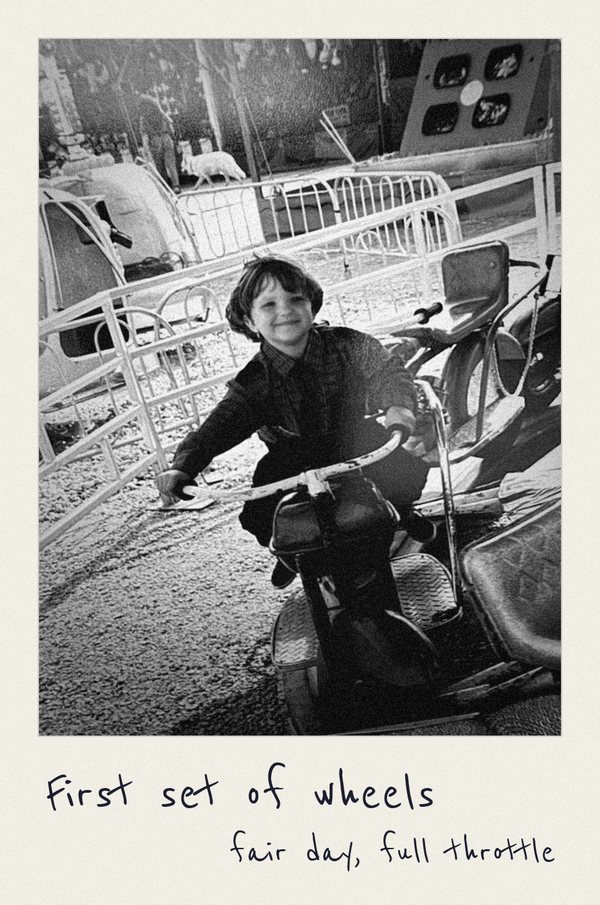
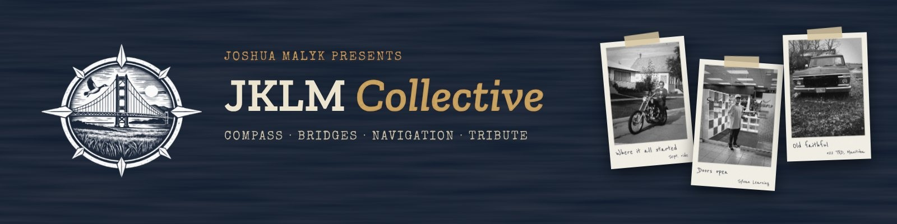
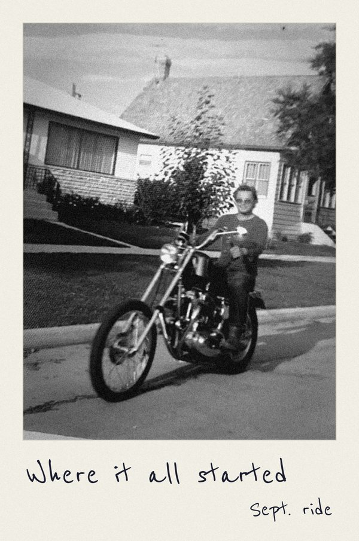
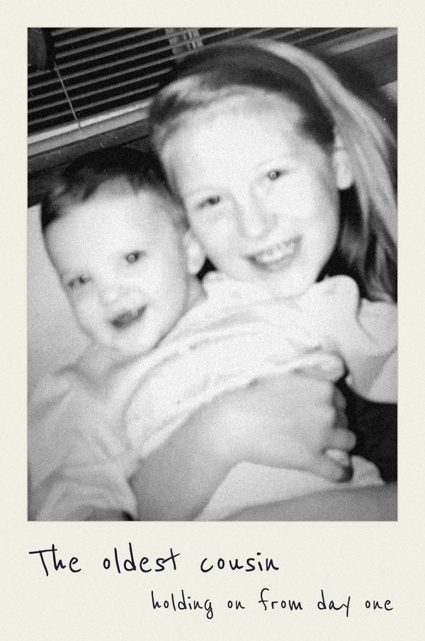
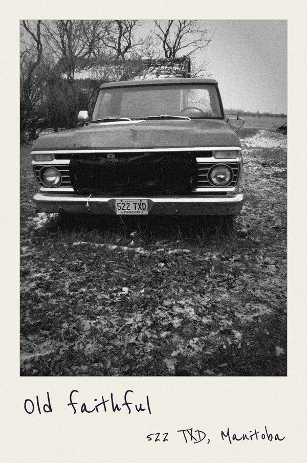

JJoshua
Steady, detail-oriented & invested in turning a vision into a product.

The story
The name is the reason, the people are who shape it, & Joshua shows up for the people with the vision.

The four names

Steady, detail-oriented & invested in turning a vision into a product.

The hero, the dad who showed up for his friends & family and set the standard for what showing up truly means.

The namesake, the anchor, the oldest cousin. The constant across generations & chapters. The name has been given again for another generation.

The Ukrainian-rooted family name that ties it all together.

The emblem
Land acknowledgement
JKLM Collective is based in Manitoba, on Treaty 1, 2, 3, 4, 5, 6 and 10 territories. These are the ancestral lands of the Anishinaabeg, Cree, Oji-Cree, Dakota and Dene Peoples, and Manitoba is the homeland of the Red River Métis. Northern Manitoba also includes the ancestral lands of the Inuit.
I am grateful to live and work here. Much of what I have learned about design and technology came through IndigiTECH, and I want JKLM Collective to show up for this community with the same respect that the people of this land have shown it for generations.